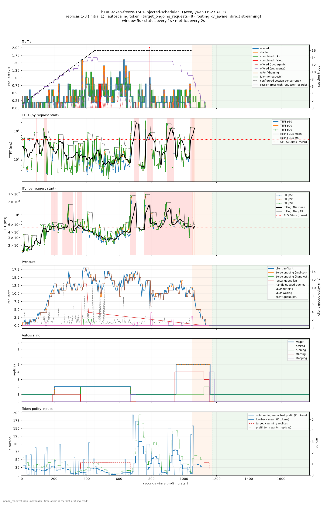
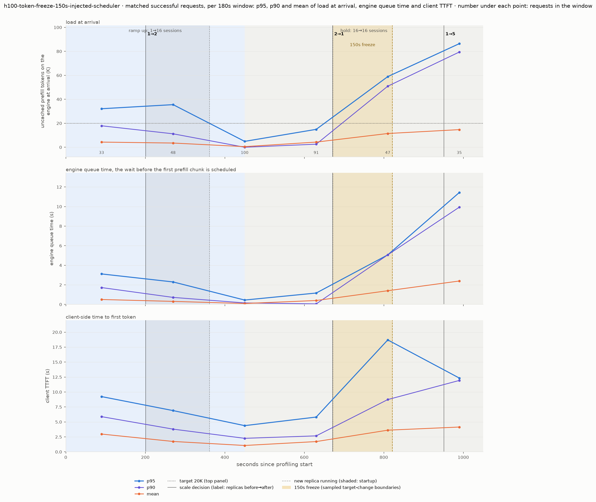
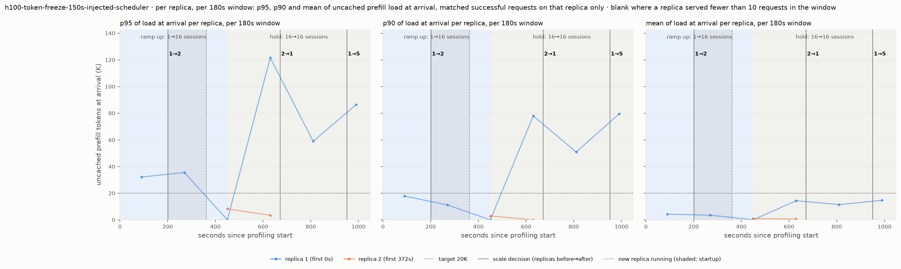
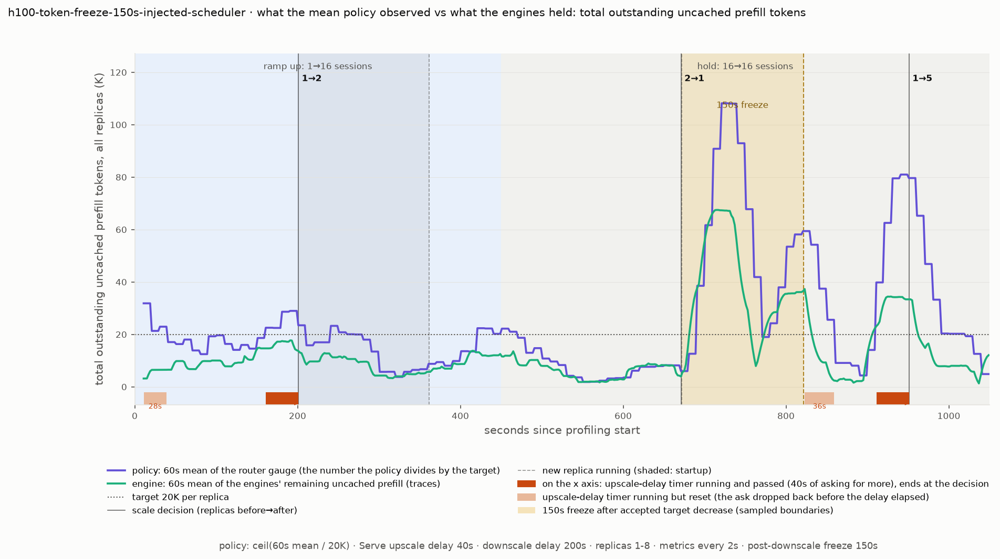
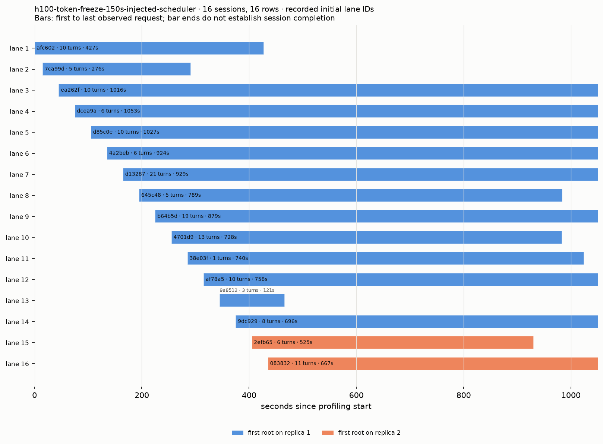

20261112T193950Z-h100-token-freeze-150s-injected-scheduler
Saved post-run report. Click any chart to view its full size. Latency plots use successful requests matched to scheduler traces; inspect the timeline/evaluation for failures.


Successful requests matched to traces: p95, p90 and mean load at arrival, engine queue time and client TTFT; request counts under each point.

Matched successful requests per replica: p95, p90 and mean arrival load; windows with fewer than 10 requests are blank.

Router policy signal and actual remaining engine prefill, averaged over 60 seconds.

Observed first-to-last request spans with recorded lane IDs when available; inferred rows are explicitly labeled.
Session bars end at the last observed request, not verified session completion. Colors identify the first root replica; the session CSV lists every observed root replica. Session assignments CSV
Plot generation status and trace inputs · Autoscaling evaluation Per-request engine data